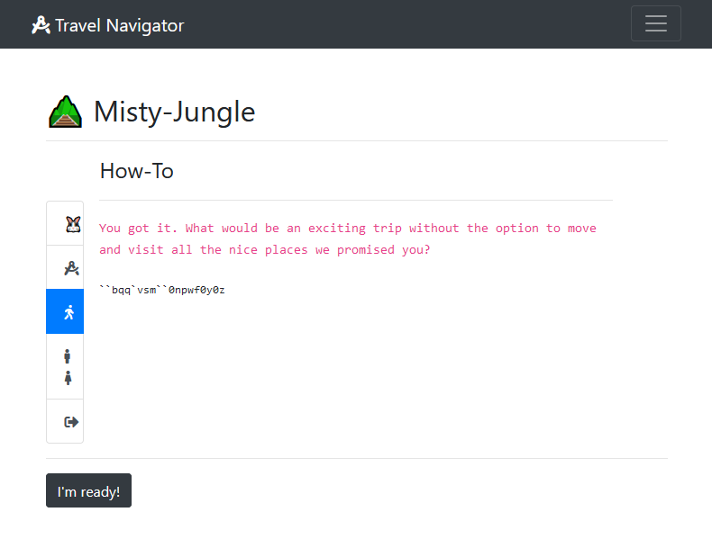
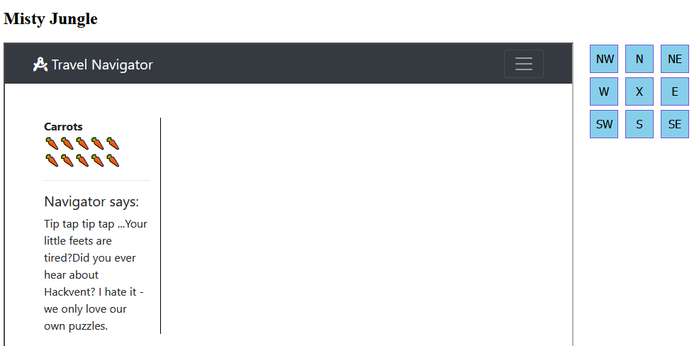
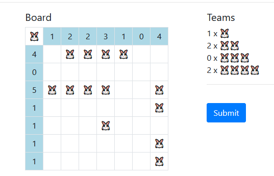

Welcome to the longest scavenger hunt of the world!
The hunt is divided into two parts, each of which will give you an Easter egg.
Part 1 is the Misty Jungle.
To get the Easter egg, you have to fight your way through a maze.
On your journey, find and solve 8 mini challenges, then go to the exit.
Make sure to check your carrot supply! Wrong submissions cost one carrot each.
Many thanks to brp64 for fun and fruitful collaboration when we tried to solve those two ultra-long challenges!
When entering the maze, one first gets sent to some intrductory pages which offer nice words, but only coded instructions.
The code is actually very simple, a Caesar shift of -1 across the whole ASCII table, but it hit a blind spot ... needed a hint for that :-(). Rocky start ...
``bqq`vsm``0npwf0y0z
__app_url__/move/x/y
OK, I'm ready! ... I think ...
One can move in all directions, also diagonally, but only one step at a time. Any more results in a scolding "You are not a superhero!". Walls are discovered painfully, namely by walking into them "Ouch! You would hit a wall." This blind navigation via the URL quickly becomes a pain, so two helpers were in order. First, a HTML frame with some navigation buttons:

<!DOCTYPE html>
<html>
<head>
<style>
.directions button {
background-color: SkyBlue;
border: 1px solid SlateBlue;
font-size: 16px;
width: 40px;
height: 40px;
margin: 3px;
}
.directions button:hover {
background-color: IndianRed;
}
.hunt_frame {
float: left;
margin-right: 20px;
}
</style>
</head>
<body>
<h2>Misty Jungle</h2>
<div>
<div class="hunt_frame">
<iframe id="hunt"
src="http://whale.hacking-lab.com:5337/1804161a0dabfdcd26f7370136e0f766"
height="800px" width="800px"
>
</iframe>
</div>
<div class="directions">
<button onclick="takeStep(-1, 1)">NW</button>
<button onclick="takeStep(0, 1)">N</button>
<button onclick="takeStep(1, 1)">NE</button>
<br>
<button onclick="takeStep(-1, 0)">W</button>
<button onclick="addHeader('test')">X</button>
<button onclick="takeStep(1, 0)">E</button>
<br>
<button onclick="takeStep(-1, -1)">SW</button>
<button onclick="takeStep(0, -1)">S</button>
<button onclick="takeStep(1, -1)">SE</button>
</div>
</div>
<script>
function takeStep(x, y) {
url = `http://whale.hacking-lab.com:5337/move/${x}/${y}`;
document.getElementById("hunt").src = url;
};
</script>
</body>
</html>
Thanks to Same Origin Policy, communication with the iframe from JavaScript is impossible, preventing the automatica drawing of a map while exploring. Instead, I used a python mazerunner:
import requests
from bs4 import BeautifulSoup
class Maze:
FREE = ' '
WALL = '#'
VISITED = '.'
START = 'O'
POS = "X"
BORDER = "+"
SPECIAL = '?'
def __init__(self, height, width, start_row, start_col):
self.height = height
self.width = width
self.grid = (
[[Maze.BORDER] * (self.width + 2)] +
[[Maze.BORDER] + [Maze.FREE] * self.width + [Maze.BORDER] for _ in range(self.height)] +
[[Maze.BORDER] * (self.width + 2)]
)
self.start_row = start_row + 1
self.start_col = start_col + 1
self.grid[self.start_row][self.start_col] = Maze.START
self.maze_file = "maze_steps.txt"
with open(self.maze_file, 'w') as fh:
fh.write('')
def draw(self):
print()
for row in range(self.height + 2):
print(''.join(self.grid[row]))
print()
def save(self, row, col):
m_row = self.start_row + row
m_col = self.start_col + col
loc = self.grid[m_row][m_col]
self.grid[m_row][m_col] = self.POS
with open(self.maze_file, 'a') as fh:
fh.write('\n')
for row in range(self.height + 2):
fh.write(''.join(self.grid[row]) + '\n')
self.grid[m_row][m_col] = loc
def write_file(self, msg):
with open(self.maze_file, 'a') as fh:
fh.write(msg + '\n')
def check(self, row, col):
m_row = self.start_row + row
m_col = self.start_col + col
return self.grid[m_row][m_col] == Maze.FREE
def mark(self, row, col, mark):
m_row = self.start_row + row
m_col = self.start_col + col
if self.grid[m_row][m_col] != Maze.START:
self.grid[m_row][m_col] = mark
def move(direction):
if direction == 'n':
mv = "move/0/1"
elif direction == 's':
mv = "move/0/-1"
elif direction == 'e':
mv = "move/1/0"
elif direction == 'w':
mv = "move/-1/0"
elif direction == 'ne':
mv = "move/1/1"
elif direction == 'nw':
mv = "move/-1/1"
elif direction == 'se':
mv = "move/1/-1"
elif direction == 'sw':
mv = "move/-1/-1"
else:
mv = "move/0/0"
req = sess.get(url + mv, allow_redirects=False)
soup = BeautifulSoup(req.text, "html.parser")
success = [x.text.strip() for x in soup.find_all(attrs={"class": "alert alert-success"})]
warning = [x.text.strip() for x in soup.find_all(attrs={"class": "alert alert-warning"})]
if "Ouch! You would hit a wall." in warning:
return False
if success:
print(success)
if warning:
print(warning)
return req.status_code
def check_pos(maze: Maze, row: int, col: int, direction='none'):
# check for walls and previously visited places
if not maze.check(row, col) and direction != "none":
return
# unvisited legal square: try to move there
status = move(direction)
if not status:
maze.mark(row, col, Maze.WALL)
return
if status == 200:
maze.mark(row, col, Maze.VISITED)
else:
maze.mark(row, col, Maze.SPECIAL)
global steps
steps += 1
if steps > max_steps:
print('too many steps')
maze.write_file("\nPosition: ({}, {}) Steps: {}".format(row, col, steps))
maze.save(row, col)
exit()
# log map state
print("Position: ({}, {}) Steps: {}".format(row, col, steps))
if steps % 10 == 1:
maze.write_file("\nPosition: ({}, {}) Steps: {}".format(row, col, steps))
maze.save(row, col)
# check adjacent squares
check_pos(maze, row-1, col+1, 'ne')
check_pos(maze, row-1, col-1, 'nw')
check_pos(maze, row+1, col+1, 'se')
check_pos(maze, row+1, col-1, 'sw')
check_pos(maze, row-1, col, 'n')
check_pos(maze, row, col+1, 'e')
check_pos(maze, row, col-1, 'w')
check_pos(maze, row+1, col, 's')
# step back
if direction == 'n':
move('s')
elif direction == 's':
move('n')
elif direction == 'e':
move('w')
elif direction == 'w':
move('e')
elif direction == 'ne':
move('sw')
elif direction == 'nw':
move('se')
elif direction == 'se':
move('nw')
elif direction == 'sw':
move('ne')
else:
print("back at start")
# main
url = "http://whale.hacking-lab.com:5337/"
sess = requests.Session()
headers = {
"Referer": "http://whale.hacking-lab.com:5337/",
"Host": "whale.hacking-lab.com:5337"
}
sess.headers.update(headers)
cookies = {
"session": "u.irqC0g...8wnYw=="
}
sess.cookies.update(cookies)
# initialize (grab cookies) and get started on path 1
req_init = sess.get(url)
steps = 0
max_steps = 400
m = Maze(20, 40, 2, 2)
check_pos(m, 0, 0)
m.write_file("\nPosition: ({}, {}) Steps: {}".format(0, 0, steps))
m.save(0, 0)
The script needs a starting point in the shape of a session cookie from the entrance
chamber. In addition, it requires a mapping region and starting coordinates
for drawing the map, which are passed as parameters to class Maze constructor.
Finding good values for those is a matter of trial and error.
Beginning from there, the script maps the maze by bumping into all available walls.
In some special locations, a HTTP redirect indicates the presence of a mini-challenge.
Those are marked on the map by question marks.
The first part of the maze contains 3 mini-challenges, and a portal which can be passed once those have been completed.
++++++++++++++++++++++++++++++++++++++++++
+ +
+ ### +
+ #O# + Misty Jungle Part I
+ #.# +
+ #.# +
+ #.# + O: Entrance
+ #.# +
+ #.# + 1: Warmup
+ #.# + 2: Cottontail Check
+ #1################# + 3: Mathonymous
+ #.........#...#...# ######### +
+ #######.#.#.#.#.#.# #..#....# + T: Mysterious Circle --> transfer
+ #...#...#...# #..#..T.# +
+ #..###.###.####.......# +
+ #...#...#...#...#####.# +
+ #.#...#...#...#.......# +
+ #.##.###2###.##..#.#.3# +
+ ###### ### ############ +
+ +
+ +
++++++++++++++++++++++++++++++++++++++++++
Once the mysterious circle has been passed, the second part awaits, with 6 more challenges and a grand finale.
++++++++++++++++++++++++++++++++++++++++++
+ +
+ +
+ + Misty Jungle Part II
+ +
+ ################################# +
+ #...#...#.......................# + O: Entrance
+ #.#.#.#.#..###.###.#######.####.# +
+ #.#.#.#.#..# #5# #.#............# + 4: Pumple
+ #.#.#.#4#..###.###.#.#####.####.# + 5: Punkt.Hase
+ #.#.#.#.#..#.#6#.#.#.#...#.#.X#.# + 6: Pssst ...
+ #.#.#.#.#....###...#.#8#.#.#..#.# + 7: Oracle
+ #O#...#............#.###.#.#..#.# + 8: CLC32
+ #################..#.....###9##.# + 9: Bunny-Teams
+ #.######## #....# +
+ #.# ###### + X: Opa & CCrypto
+ #7# +
+ ### +
+ +
+ +
+ +
++++++++++++++++++++++++++++++++++++++++++
A note on carrots and session cookies: It really helps to save the session cookie from the browser whenever a challenge has been passed. Restoring this cookie moves one back to the location and carrot level where the cookie was saved. Useful for challenges involving a lot of trial and error ...
Weeeeelcoooome!
Are you ready for a little warmup to get your most important sin on focus?
I was very curious about what my most importan sin might be ... could be fun getting that on focus :-) Strangely, the German word for "sense" is Sinn ...
We are given the template sequence
[[1,0], [2,4], [8,1], ...]and asked to find something involving "pixels". The two PNG files shown side-by-side are very different when it comes to length and binary content, but in fact they differ only in single pixels, which were set to zero in the second image. Extracting those was simple with a script:
from PIL import Image
c11 = Image.open("c11.png")
p11 = c11.load()
c11x = Image.open("c11_x.png")
p11x = c11x.load()
w, h = c11.size
for y in range(h):
for x in range(w):
if p11[x, y] != p11x[x, y]:
print(x, y, p11[x, y], p11x[x, y])
x y rgb pic1 rgb pic2
341 27 (11, 12, 14) (0, 0, 0)
392 165 (25, 26, 28) (0, 0, 0)
359 173 (31, 32, 34) (0, 0, 0)
41 384 (38, 42, 45) (0, 0, 0)
393 447 (27, 31, 32) (0, 0, 0)
241 467 (122, 85, 79) (0, 0, 0)
288 513 (130, 100, 74) (0, 0, 0)
383 519 (222, 182, 157) (0, 0, 0)
478 561 (15, 16, 18) (0, 0, 0)
230 562 (224, 193, 164) (0, 0, 0)
I could not find any correspondence with the template sequence. My guess is that
a list of the pixel positions was the intended answer, in some (any?) order. However,
it seems that the challenge script is bugged, as any entry of the form
[a, b] for arbitrary integers a and b is accepted. Lucky day :-)
WARNING!
C0tt0nt4il Ch3ck V2.0 required
You need 10 right answers in time!
Horrors! Automatic captcha recognotion! Please not ...
Luckily, the solution of the sum in the captcha (32 + 15 = 47) is included in the
image name of the captcha:
3ea51eb7-b92e-47-b393-6528daa628cd.png
The script below repeats the procedure of extracting the middle element of the
image name and feeding it to the page 10 times, and then collects the session cookie
from the success page.
import requests
from bs4 import BeautifulSoup
url = "http://whale.hacking-lab.com:5337/"
sess = requests.Session()
headers = {
"Referer": "http://whale.hacking-lab.com:5337/",
"Host": "whale.hacking-lab.com:5337"
}
sess.headers.update(headers)
cookies = {
"session": "session=u.7aXAI ... insert session cokie ... voMeg=="
}
sess.cookies.update(cookies)
req = sess.get(url)
for n in range(10):
soup = BeautifulSoup(req.text, "html.parser")
print(soup.find('code').text)
img = soup.find(attrs={"id": "captcha"})
answer = img['src'].split('-')[2]
req = sess.get(url + '/?result=' + answer)
req_sol = sess.get(url)
print("Session cookie: please replace")
s_cookie = req_sol.headers['Set-Cookie']
print(s_cookie[8:])
soup = BeautifulSoup(req_sol.text, "html.parser")
print(soup.prettify())
One in mind ....
plus ...
minus ....
WAAAAAH.
Oh wow it's you. I already heard you helped my brother.
This one should be easy for you then:
We need to enter operators to make the equation correct:
18 / 11 + 19 / 20 * 2 * 5 = 11.136363636363637
You step onto the circle and feel some kind of energy flowing through your body. It feels like you could do some kind of giant jump through the map, but as soon as you raise your toes and try to jump, you simply land onto them again without any special effect. Maybe it's too early and something needs to be done before this circle works?
Nothing to be done here until the first three mini-challenges are done. Then this teleports to the second map.
Hey I'm Pumple. My Puzzle is very famous around here. Do you think you have what it takes to solve it? No, you don't - haha! Noone solved it yet.
The puzzle changes every time by permuting bunny properties. For me it was:
| Bunny #1 | Bunny #2 | Bunny #3 | Bunny #4 | Bunny #5 | |
|---|---|---|---|---|---|
| Name | Snowball | Midnight | Angel | Bunny | Thumper |
| Color of backpack | Green | Red | Blue | White | Yellow |
| Characteristic | Attractive | Lovely | Handsome | Funny | Scared |
| Starsign | Aquarius | Pisces | Taurus | Virgo | Capricorn |
| Pattern on backpack | Camouflaged | Chequered | Striped | One-coloured | Dotted |
Hey my friend, I found this one, on my journey. Do you know what to do with it?
The gif is a sequence of 1x1 frames with indexed colouring. All frames use colour 0 for their pixel, but the colurmap changes: colour 0 corresponds to either (0, 0, 0) or (0xff, 0xff, 0xff). This forms a binary pattern, which can be interpreted as ASCII characters. The short script below does that:
from PIL import Image, ImageSequence
img = Image.open("ch15_dot.gif")
code = ''.join(['0' if frame.getpalette()[0] == 0 else '1' for frame in ImageSequence.Iterator(img)])
print(code)
solution = [chr(int(code[n:n+8], 2)) for n in range(0, len(code), 8)]
print(''.join(solution))
The result is the flag lxxgsufjjxaiee
... come over here, listen and answer me.
A different regex challenge is given with every visit, which must be matched.
He: ([1337])\1
You: ...
In this case, the round brackets capturing group can be 1, 3 or 7, and '\1' is a repeat of whatever is in the capturing group. One solution would be "77".
You didn't come here to make the choice. You've already made it.
You're here to try to understand why you made it.
Who I am you ask? Just call me "The Oracle".
I know you want to help me with this.
The oracle has a hint for you!
Start with the number I gave you as seed, use the next random number in range
as A NEW seed and after doing it 1336 times, you will get the right answer!!
import random
random.randint(-(133742), 133742)
1003970696057213570063084892026312074734436737532230537089002584193241
64258841934953655682343516520808097702018622991090537196357399
Following instructions ...
import random
ran = 1003970...622991090537196357399
for n in range(1337):
random.seed(ran)
ran = random.randint(-(1337**42), 1337**42)
print(ran)
gives the result
1050669649848229748261753129907091082478205969123173585355283141058300
00038998323240773583112633648846906791807377906540319453599330
Dreams ... just dreams, but today you have the chance to live a second life. Go! Start breathing and prove that you are worth this new beginning and don't make the same mistakes again. Hints for your restart: Do something when 3 or more sins tell you it is right.
I found the challenge text very confusing ... maybe this was intended. "sin" is supposed to mean "sense" I guess. Several false leads made this the hardest challenge of the batch. For example, the title "CLC32" and the answer format "/?checksum=..." seem to point towards a checksum algorithm. Which has absolutely nothing to do with this challenge ... but cost me quite some time.
The first button brings up a JSON error:
{"errors":[{"message":"Must provide query string."}]}
So let's give it a query string ... /live/a/life?query=123
{"errors":[{
"message":"Syntax Error GraphQL (1:1) Unexpected Int \"123\"\n\n1: 123\n ^\n",
"locations":[{"line":1,"column":1}]
}]}
The plot thickens ... what the hell is GraphQL? It turns out that this is a query
language for APIs which uses JSON as vehicle. Essentially, each recognized query
element calls an associated function on the server (which may or may not take
parameters). Answers are returned in a shape similar to the query.
So far we have no idea about the correct format of queries. This is specified in a so-called schema on the server, which can be retrieved by the client. This process is called introspection and uses queries such as
?query={__schema{types{name}}}
A very short form of the schema used is:
{
"data": {
"__schema": {
"queryType": {
"name": "Query"
},
"types": [
{
"kind": "OBJECT",
"name": "Query",
"fields": [
{"name": "In"},
{"name": "Out"}
],
},
{
"kind": "OBJECT",
"name": "In",
"fields": [
{"name": "Out"},
{"name": "see"},
{"name": "hear"},
{"name": "taste"},
{"name": "smell"},
{"name": "touch"}
],
},
{
"kind": "OBJECT",
"name": "Out",
"fields": [
{"name": "Out"},
{"name": "see"},
{"name": "hear"},
{"name": "taste"},
{"name": "smell"},
{"name": "touch"}
],
},
],
}
}
}
There are no parameters, no "special effects" and also no descriptions, of course. How a query is handled on the server is anyones guess. After some experimentation, the expected query form seemed to be
/live/a/life?query={In{Out{see, hear, taste, smell, touch}, see, hear, taste, smell, touch}}
which results in a changing answer like
{"data":{
"In":{
"Out":{
"see":"h",
"hear":"q",
"taste":"C",
"smell":"5",
"touch":"o"
},
"see":"x",
"hear":"v",
"taste":"I",
"smell":"u",
"touch":"3"
}
}}
I automated these queries in order to find a pattern. After 10-40 cycles,
the answers would become permutations of the letters 'd', 'e', 'a', 't', 'h'.
So, after initialisation with the restart button (/?new=life"), one is
supposed to go on "breathing" for a while (In, Out) until death reaps one, and see
what happens. An example:
In | Out
b u d y n | W W W W W
3 i g 7 Q | 2 A 0 r c
s 4 f W h | l w u w 8
U F U E w | Z 0 Z c 9
P O m b E | o 4 5 V L
j Y v o I | Q 7 7 b p
T w u F s | c A c g p
O 7 q A u | v v w v v
X g h c B | R U F O r
v 8 m I F | x P o o R
D a d S n | 3 Q e Q q
9 3 J L C | A 0 r r 6
C l Y c k | F j h D 7
E F F F F | j W o e 8
8 Z 1 o T | A D A A n
G a e s 2 | 2 2 F d P
a t d h e | t d a h e
Death in round 16
The letters look fairly random, but there are many more repeats than expected.
According to the description, we should "do something when 3 or more senses tell
us it is right", meaning that an answer is repeated by 3 or more senses.
The script below starts a new life, and collects all characters appearing three or more times as answer to In or Out. After death, these characters are submitted as solution.
import requests
class Breath:
def __init__(self, breath):
self.see = breath['see'] if 'see' in breath else None
self.hear = breath['hear'] if 'hear' in breath else None
self.taste = breath['taste'] if 'taste' in breath else None
self.smell = breath['smell'] if 'smell' in breath else None
self.touch = breath['touch'] if 'touch' in breath else None
def test_death(self):
return {self.see, self.hear, self.taste, self.smell, self.touch} == {'d', 'e', 'a', 't', 'h'}
def get(self):
return [self.see, self.hear, self.taste, self.smell, self.touch]
def find3(self):
vals = self.get()
for c in vals:
if vals.count(c) >= 3:
return c
return ''
url = "http://whale.hacking-lab.com:5337"
url_query = url + "/live/a/life?query="
query = "{In{Out{see, hear, taste, smell, touch}, see, hear, taste, smell, touch}}"
sess = requests.Session()
headers = {
"Host": "whale.hacking-lab.com:5337",
}
sess.headers.update(headers)
cookies = {
"session": "z.PInhmGQv ... replace with session cookie "
}
sess.cookies.update(cookies)
# restart life
sess.get(url + "?new=life")
answer = ''
for rd in range(200):
req = sess.get(url_query + query)
br_in = Breath(req.json()['data']['In'])
answer += br_in.find3()
br_out = Breath(req.json()['data']['In']['Out'])
answer += br_out.find3()
print(' '.join(br_in.get()) + ' | ' + ' '.join(br_out.get()))
if br_in.test_death() or br_out.test_death():
break
print("Death in round", rd)
print(answer)
# submit answer
req = sess.get(url + "?checksum=" + answer)
# print(req.text)
print(req.headers['Set-Cookie'])
Wow, you made it here. Are you ready to play a game?
We are invited to play a game of battlebunny (Häschen versenken) ... it may take several attempts if the solution is non-unique.
You are too late for their famous story telling. The original story tellers left already several years ago. Many people liked the stories they told, but they got kind of one-sided at the end of their career. Today we know they used a specific formula to change their storiess and all the containing chapters in a magic way. The notes we found have been implemented into this site.
The storyteller notes have been implemented as JavaScript:
let theBoxOfCarrots = [
[91968, "16.8.8... long story ...19.19."]];
let a = ['abcdefghijklmnopqrstuvwxyzABCDEFGHIJKLMNOPQRSTUVWXYZ0123456789'];
let c = 0;
let f = false;
let n = 0;
let s = 1;
let alive = true;
let age = 0;
let destiny = 7331;
let note = 'Whoever finds this may continue to tell our stories or may reveal
the secret that is hidden behind all of them. gz opa & ccrypto';
function heOpened(a) {
return a;
}
Object.prototype.and = function and() {
if (s % 1 === 0) console.log('just');
if (s % 3 === 0) console.log('a');
if (s % 13 === 0) console.log('lie');
if (s % 37 === 0) console.log('?');
return this;
};
Object.prototype.then = function then() {
s += 1;
return this;
};
Object.prototype.heClosed = function heClosed() {
this.sort((a, b) => {
return a[0] - b[0]
});
return this;
};
Object.prototype.heShuffled = function heShuffled(what) {
if (what === 'everything') {
this.forEach((o, i) => {
s = o[0] + Math.abs(Math.floor(Math.sin(s) * 20));
this[i][0] = s;
});
this.forEach((o, i) => {
this[i][1] += (i + ".");
});
}
return this
};
Object.prototype.but = function but() {
s = s;
return this
};
Object.prototype.sometimes = function sometimes() {
if (s % 133713371337 === 0) f = true;
return this
};
Object.prototype.heForgot = function heForgot() {
if (f) s = Math.abs(Math.floor(Math.sin(s) * parseInt(13.37)));
f = false;
return this
};
Object.prototype.heSaid = function heSaid(w) {
let magic = 0;
w.forEach((y) => {
if (y === 'ca') {
magic += 3;
}
if (y === 'da') {
magic -= 1;
}
if (y === 'bra') {
magic /= 2;
}
});
s -= magic;
return this;
};
Object.prototype.heDidThat = function heDidThat(a) {
if (a === 'for a very long time.') {
theBoxOfCarrots = this;
age += 1;
if (age > destiny) {
alive = false;
}
}
};
Object.prototype.heRolled = function heRolled(a) {
if (a === 'a really large dice') {
n = Math.abs(Math.floor(Math.sin(s) * 1337));
}
return this
};
let tell_a_story = () => {
while (alive) {
heOpened(theBoxOfCarrots)
.and().then().heRolled('a really large dice')
.and().then().heSaid(['a', 'bra', 'ca', 'da', 'bra'])
.but().sometimes().heForgot()
.and().then().heShuffled('everything')
.and().then().heClosed(theBoxOfCarrots)
.and().heDidThat('for a very long time.');
}
};
tell_a_story();
theBoxOfCarrots contains 20 huge carrots, each of which has an integer length and a dot separated list of 7332 indices between 0 and 19:
length index (7332 items)
Carrot 0: [ 91968, '16.8.8.10. ... .0.0.0.0.' ]
Carrot 1: [ 92109, '14.7.7.7. ... .1.1.1.1. ]
...
Carrot 19: [ 94177, '1.3.3.3. ... .19.19.19.19. ]
This represents the story told so far. The recipe in tell_a_story
while (alive) {
heOpened(theBoxOfCarrots)
.and().then().heRolled('a really large dice')
.and().then().heSaid(['a', 'bra', 'ca', 'da', 'bra'])
.but().sometimes().heForgot()
.and().then().heShuffled('everything')
.and().then().heClosed(theBoxOfCarrots)
.and().heDidThat('for a very long time.');
}
explains how the next generation of the story is produced. As with all good stories, many of the functions called are just embellishments which have no effect on the story itself. Getting rid of these leaves us with a moch simpler recipe:
s = 1
repeat 7332 times:
s += 2
for carrot in box:
carrot.length = s = carrot.length + Math.abs(Math.floor(Math.sin(s) * 20))
carrot.index += 'n.' where n is the current box position
s += 1
sort carrots according to length (ascending)
As the note in the code states, 'Whoever finds this may continue to tell our stories or may reveal the secret that is hidden behind all of them. gz opa & ccrypto.' So the secret should appear if we manage to unravel the story, to get back to its original form. The script below does that (comments inline):
import json
import math
class Carrot:
def __init__(self, carrot_raw):
self.length = carrot_raw[0]
self.index = list(map(int, carrot_raw[1].split('.')[:-1]))
def find_last(bx):
# find element with highest final index
for c in bx:
if c.index[-1] == len(bx) - 1:
return c
# create box of carrots from JSON data (extracted from javaScript)
with open("carrot.json", 'r') as fh:
box_raw = json.load(fh)
box = [Carrot(c) for c in box_raw]
size = len(box)
# reverse 7331 rounds (final round needs special treatment)
for rnd in range(7331):
# undo last sorting of box by ordering carrots according to final index values
# the final index of each carrot is removed
prev_order = sorted([(carrot.index.pop(), carrot) for carrot in box], key=lambda c: c[0])
box = [x[1] for x in prev_order]
# undo the change to carrot length
# this is derived from the length of the previous carrot in the box
for n in range(size-1, 0, -1):
box[n].length -= abs(math.floor(20 * math.sin(box[n - 1].length)))
# special treatment of first carrot in box:
# We have to find the carrot with highest index from the previous round as reference
# This only works if no complete reversal happens, i.e. box[0] -> box[size-1]
last_carrot = find_last(box)
if last_carrot == box[0]:
print("Reversal")
box[0].length -= abs(math.floor(20 * math.sin(find_last(box).length + 3)))
# check that the carrots are now ordered according to length
length_order = [c.length for c in box]
if sorted(length_order) != length_order:
print("Oops: wrong ordering in round", rnd)
exit()
# Reverse the first story change
prev_order = sorted([(carrot.index.pop(), carrot) for carrot in box], key=lambda c: c[0])
box = [x[1] for x in prev_order]
for n in range(size-1, 0, -1):
box[n].length -= abs(math.floor(20 * math.sin(box[n - 1].length)))
box[0].length -= abs(math.floor(20 * math.sin(3)))
final_state = [carrot.length for carrot in box]
print(final_state)
# use alphabet from JS code as index
a = 'abcdefghijklmnopqrstuvwxyzABCDEFGHIJKLMNOPQRSTUVWXYZ0123456789'
solution = [a[x] for x in final_state]
print(''.join(solution))
The original story turns out to be
[7, 4, 53, 61, 35, 5, 18, 38, 24, 22, 8, 22, 12, 44, 23, 30, 24, 5, 50, 0]Taking the alphabet a defined in the JavaScript code as index set, this translates to
he19JfsMywiwmSxEyfYa. Adding separators, the flag
for egg 21 becomes: he19-JfsM-ywiw-mSxE-yfYa